World Meteorological Organization · Early Warnings for All
Satellite Infrastructure Dashboard
Regional Associations II and V — reception, connectivity, storage and visualisation
Monitoring Data Collection Campaign 2025
AOMSUC country reports 2024–2025
Preliminary gap analysis, 18 November 2025